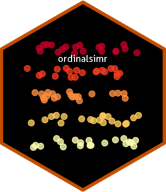

Set ordinalsimr Shiny App Default Values
Source:R/set_ordinalsimr_options.R
set_ordinalsimr_options.RdSet ordinalsimr Shiny App Default Values
Usage
set_ordinalsimr_options(
default_iterations,
default_size_min,
default_size_max,
default_ratio,
default_distributions,
default_entry_rows
)Arguments
- default_iterations
number of iterations to run
- default_size_min
number for the small end of the sample size range
- default_size_max
number for the large end of the sample size range
- default_ratio
text ratio of the number of levels in the two groups, format of "50:50"
- default_distributions
data frame of the distributions of the levels in the two groups
- default_entry_rows
number of rows to initialize the (empty) data frame with
Examples
# Set the default values for the ordinalsimr Shiny app
set_ordinalsimr_options(
default_iterations = 1000,
default_size_min = 10,
default_size_max = 100,
default_ratio = "50:50",
default_distributions = data.frame(c(0.4, 0.3, 0.3), c(0.8, 0.1, 0.1))
)
#> Setting ordinalsimr.default_iterations to 1000
#> Setting ordinalsimr.default_size_min to 10
#> Setting ordinalsimr.default_size_max to 100
#> Setting ordinalsimr.default_ratio to 50:50
#> Setting ordinalsimr.default_distributions to c(0.4, 0.3, 0.3)c(0.8, 0.1, 0.1)
# Values can be either overwritten or unset by setting them to NULL. The Shiny
# app still has backup values if these options are not set. Not all arguments
# need to be provided
set_ordinalsimr_options(
default_iterations = 500, # Ex: update argument
default_size_min = NULL, # Ex: unset argument
default_size_max = NULL, # Ex: unset argument
# default_ratio = NULL, # Ex: arg not provided (by commenting out)
default_distributions = NULL
)
#> Setting ordinalsimr.default_iterations to 500
#> Setting ordinalsimr.default_size_min to
#> Setting ordinalsimr.default_size_max to
#> Setting ordinalsimr.default_distributions to